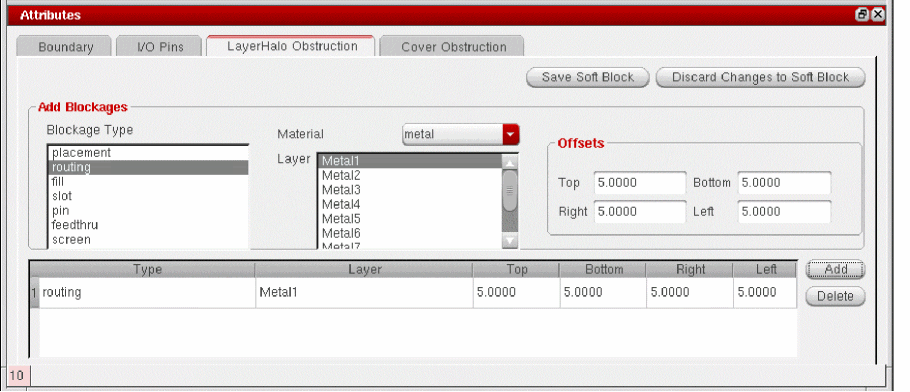
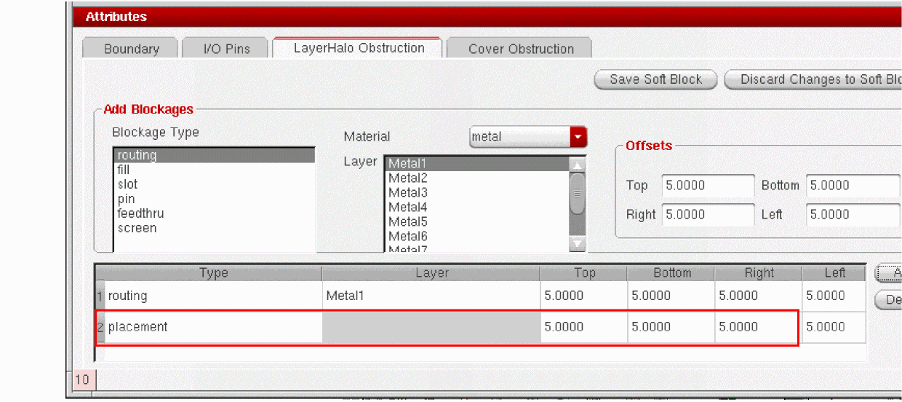

Specifying LayerHalo Obstructions
LayerHalo obstructions are defined at the child-level, and are effective at the parent-level. Alternatively, you can define cover obstructions to block routing on the specified layer at the top level. The selected layer and all lower layers are automatically obstructed.
A soft block obstruction is implemented using a halo object instead of a blockage object, because there is no need to manually remove the halo prior to routing.
-
To define a routing, fill, slot, pin, feedthru, or screen obstruction, you need to set the Blockage Type, and specify the Layer and Offsets. There is also a Material filter which you can use to select layers based on the material defined for that layer in the technology file.
-
The list of extractable layers is retrieved from the constraint group set for the current layout cellview. If there is no constraint group set for the current layout cellview, the software retrieves the layers from the constraint group specified by the
setupConstraintGroupenvironment variable. The CPH soft block reads the environment variable and looks for the constraint group carrying the required information in the associated technology file. The technology file may be an Incremental Technology Database file (ITDB) or a design techfile. - If there are no layers defined in either location, it issues a message and disables the soft block definition.
-
The list of extractable layers is retrieved from the constraint group set for the current layout cellview. If there is no constraint group set for the current layout cellview, the software retrieves the layers from the constraint group specified by the
- To define a placement obstruction, you need only set the Offsets. You can define only one placement obstruction per block.
To specify parameters for a LayerHalo obstruction,
- Click the LayerHalo Obstruction tab.
-
To define a routing obstruction:
- Select routing in the Blockage Type pane.
-
Choose metal from the Material drop-down list.
The Layer list is reduced to show only the extractable metal layers defined in the active constraint group. - Set the Offsets for the four sides of the soft block.
-
Click Add to add the obstruction to the list.
-
To define a placement obstruction:
-
Select placement in the Blockage Type pane.
placement is removed from the list of blockage types because you can create only one placement obstruction per soft block.
The Material and Layers controls are grayed out because they are not required to define a placement obstruction. - Set the Offsets for the four sides of the soft block.
-
Click Add to add the obstruction to the list.
-
Select placement in the Blockage Type pane.
-
To update an obstruction, edit the fields you require directly in the table and press
Returnto accept the new value. -
To delete an obstruction, select it in the table and click Delete.
The obstruction is deleted and removed from the table.
Related Topics
Comparison between LayerHalo and Cover Obstructions
Soft Block Mode in the CPH Window
Return to top